Project 2: Fun with Filters and Frequencies!
Gautam Bhooma · CS 180 · Fall 2026
Part 1: Fun with Filters!

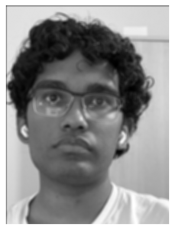

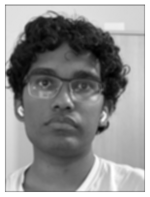
The code following implements convolution with 4 and 2 for loops, which are both then applied on a picture of myself alongside scipy.signal.convolve2d as shown above. The visual similarity between the last 3 pictures shows that all convolutions result in the same image.
def convolution4(img, kernel, mode = "same"):
#kernel is 2d array
K = kernel[::-1, ::-1]
p = pad(img, kernel.shape, mode)
H, W = img.shape
kH, kW = kernel.shape
H -= kH - 1
W -= kW - 1
result = np.zeros((H, W))
for i in range(H):
for j in range(W):
sum = 0
for h in range(kH):
for w in range(kW):
sum += p[i + h, j + w] * K[h, w]
result[i][j] = sum
return result
def convolution(img, kernel, mode="same"):
#kernel is 2d array
K = kernel[::-1, ::-1]
p = pad(img, kernel.shape, mode)
H, W = p.shape
kH, kW = kernel.shape
H -= kH - 1
W -= kW - 1
result = np.zeros((H, W))
for i in range(H):
for j in range(W):
sum = np.sum(p[i:i+kH, j:j+kW] * K)
result[i][j] = sum
return result
These images of my face can be convolved with the finite difference operators Dx and Dy, to get the following images. The edges appear weakly because of the high resolution of the images, but they still appear.


These operations can also be done on the cameraman image. First by convolving the image with the finite difference operators, the gradient magnitude can be calculated. Then, by limiting the magnitude by a lower bound (to remove noise), the edges can be isolated, creating an "edge map":


To get a more defined edge map and remove the noise created by the grass, the gray-scaled cameraman image can first be blurred before edges are isolated. This can be done by either blurring the image first then taking the derivatives, or taking the derivative of the Gaussian blur before applying it onto the image. Both of these approaches are done below, to depict identical results.
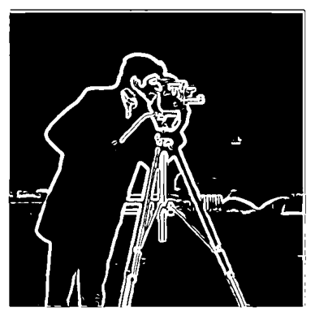

Part 1: Fun with Frequencies!
In contrast with the Gaussian blur, which largely preserves low frequency features, high frequency features can be extracted from an image by simply subtracting the Gaussian blur from the original image. Adding these features back to the image with some weightage allows for a "sharpened" image. Below is a picture of the Taj Mahal, along with a sharpened version of said image.

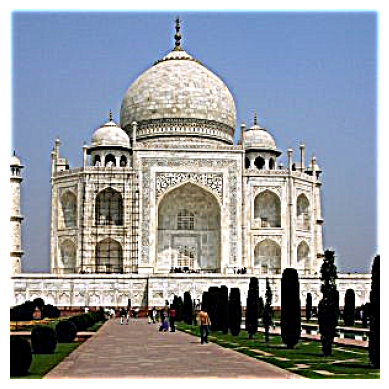
To ensure that this sharpening works, I took the picture of the Gateway building that I had from Project 0, blurred it, and consequently sharpened it. Not all features survived the re-sharpening, like letters, but the general geometric structure of the building was recreated by the sharpening.
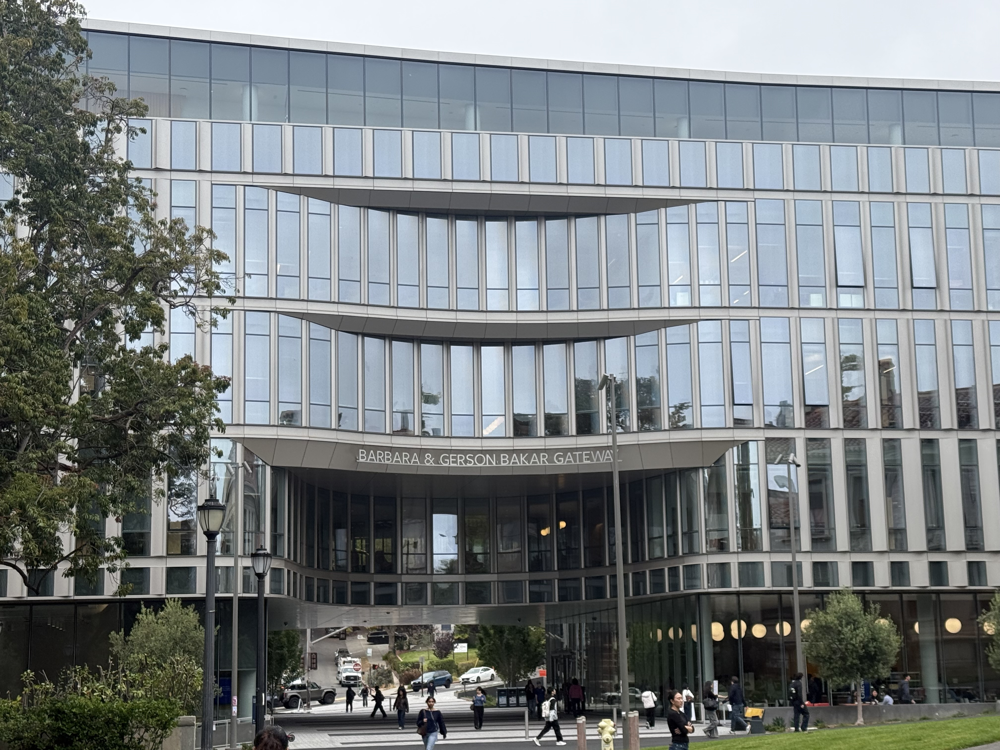
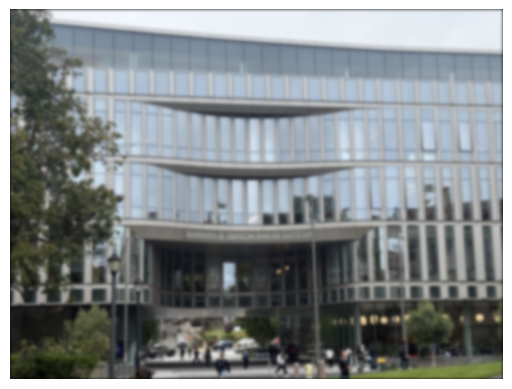
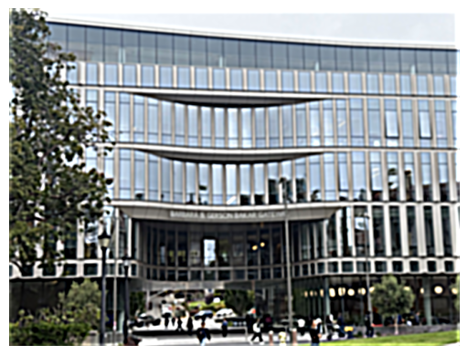
Hybrid images can be made by combinging the low-frequency features of one image with the high-frequency ones of another. Therefore, it will appear to be one image close up, and another one far away where low frequency features dominate. To have a properly accurate hybrid image, important features need to be roughly aligned. I decided to try to make a hybrid of two pictures of a tiger and a lion, both of which are staring into the camera. I aligned them with the provided code, using their eyes as reference points, then extracted the high frequency features of the tiger and the low frequency features of the lion, which I then combined. The image was colorized because the lion lacked a lot of the distinct features that the tiger had (ex. the stripes), so would not appear unless color was added.
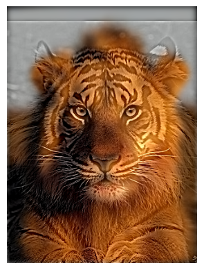
Another way to blend two images uses multi-resolution blending, which involves first implementing the Gaussian and Laplacian stacks. Unlike pyramids, stacks do not decrease the size of the image, but maintain its size whilst doing repetitive blurs. to ensure that the stacks worked, they were tested on a picture of an apple:
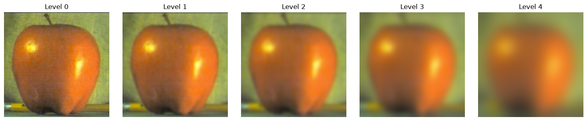
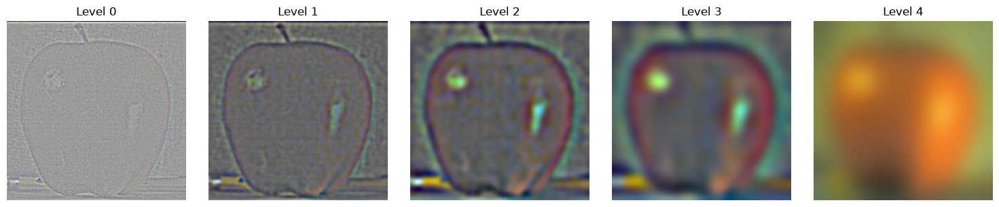
A blend can then be created (an "oraple": orange + apple) by building the two Laplacian stacks then combining them with a Gaussian stack of a mask (indicating where the line will be). I also did this by combining my pictures of the tiger and the lion. This one didn't turn out nearly as well, but largely did look like a blend, especially if not looked at too closely.
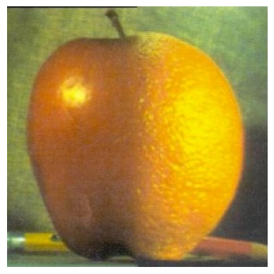
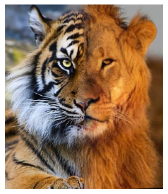